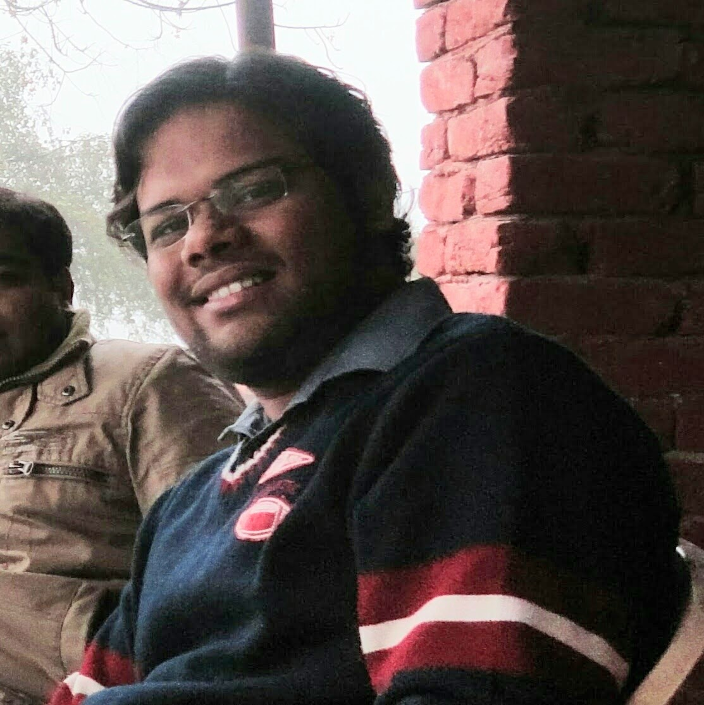

About
Computer programmer with interests in PL theory, networking and algorithm design. Equally love dealing with both theory and practical systems. Believe in simplicity of things and power of critical thinking.



Computer programmer with interests in PL theory, networking and algorithm design. Equally love dealing with both theory and practical systems. Believe in simplicity of things and power of critical thinking.
B.Tech. in Computer Science and Engineering, IIIT-Hyderabad, 2006-10
I joined IIIT-Hyderabad in the year 2006 after having cleared IIT-JEE and AIEEE examinations. My interest for computers and technology in general led me to a formal education in Computer Science. IIIT-Hyderabad actively encourages research at undergraduate level and it is reflected in the curriculum. Had great fun deep diving into theoretical computer science aspects such as automata theory, algorithms and scientific computing. Taught Software Engineering course as Teaching Assistant for a semester.
Part of Edge Foundation platform. The core focus of Edge Foundation is to develop scalable software that enhances Walmart's cloud computing platform.
Worked on payments platform that includes components for payments, refunds, vault, frauds, and reconciliations. My team was responsible for features, peformance, and security of payments platform and related applications - databases, queueing systems and load balancers. Also built RBStreams - centralized Kafka platform serving multiple use cases in redBus.
Worked on near field communication platform based on BLE (Bluetooth Low Energy). Developed native android app, communication APIs, BLE device management console. Worked with prominent retailers to improve and pilot the project. Researched on improving range detection and low latency payload transfers.
Worked as part of financials group on data extraction applications used by research teams to scrape multi-class financials of companies (capital structure, splits and depositary receipts). Worked on maintaining the data delivery systems to the S&P Capital IQ platform and excel plug-in.
Built controls on MMC framework for administering client-side functionalities of OpenAFS - a distributed file system developed at Carnegie Mellon University. It was a small step towards Microsoft's goal to contribute more towards the open source community.